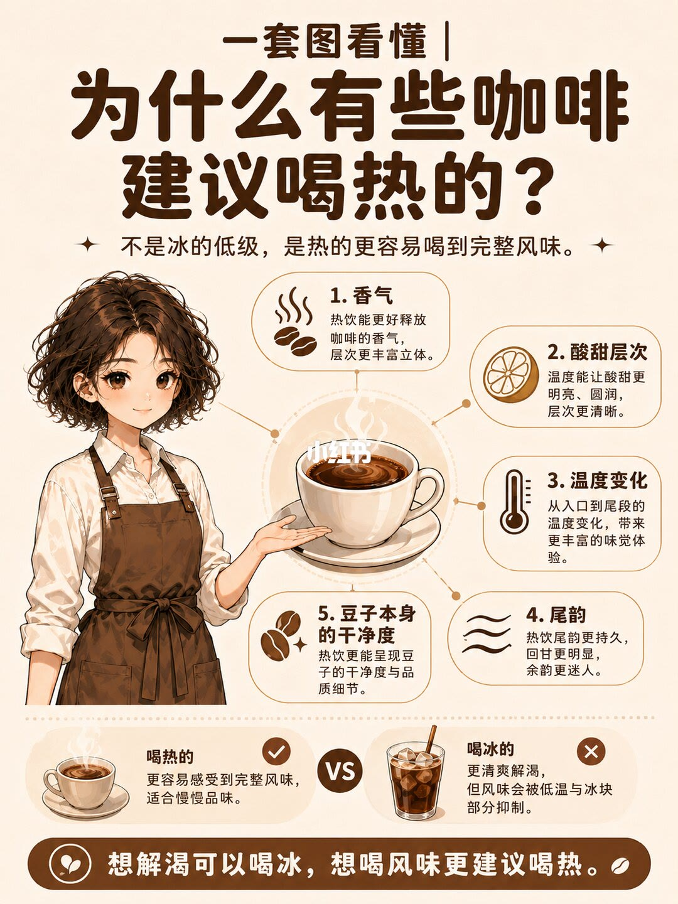
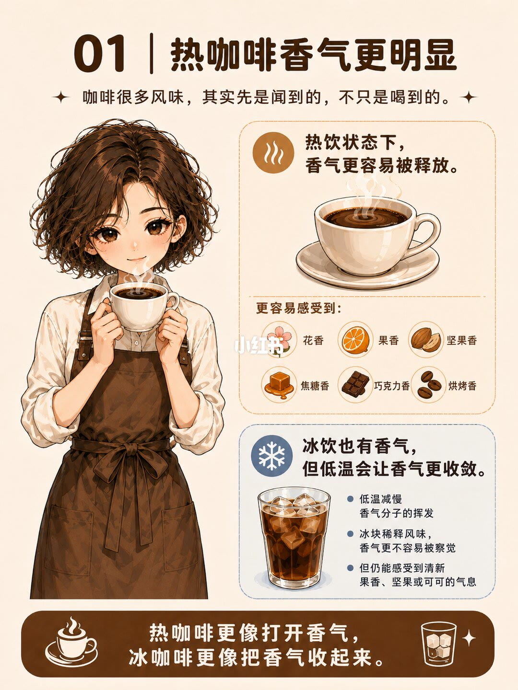
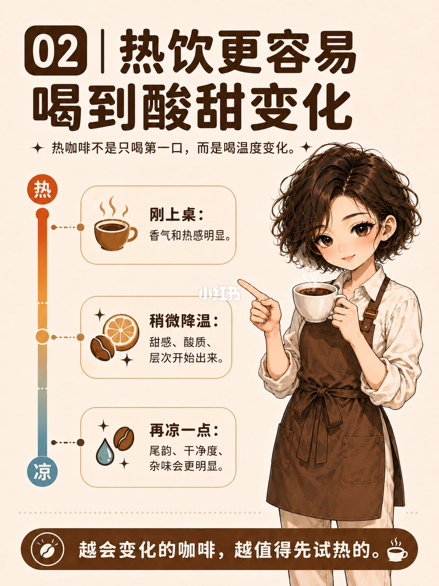
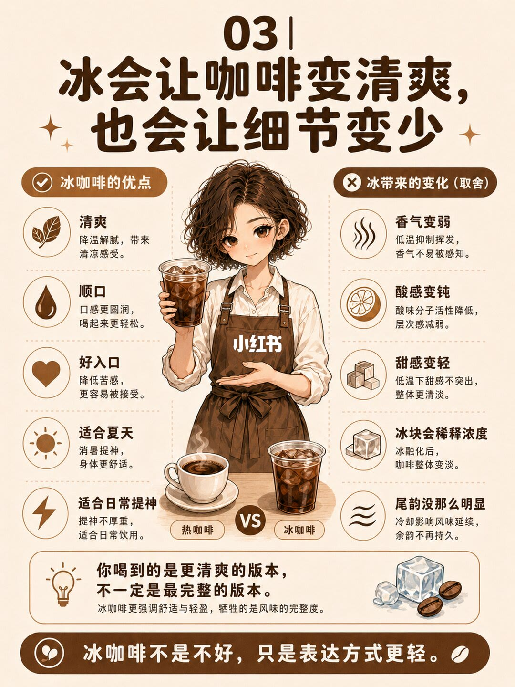
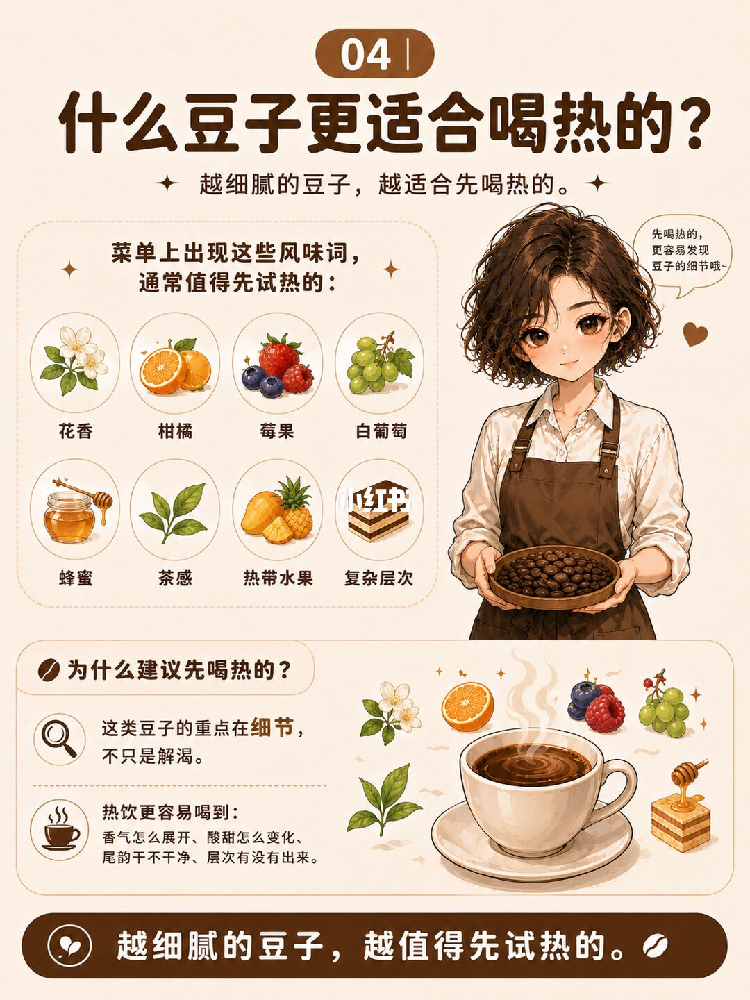
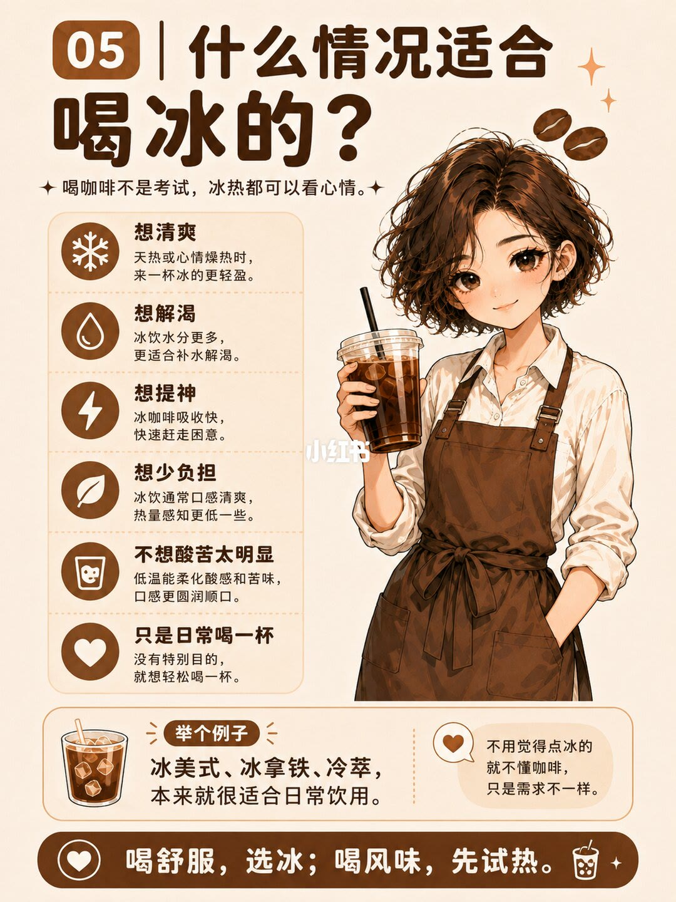
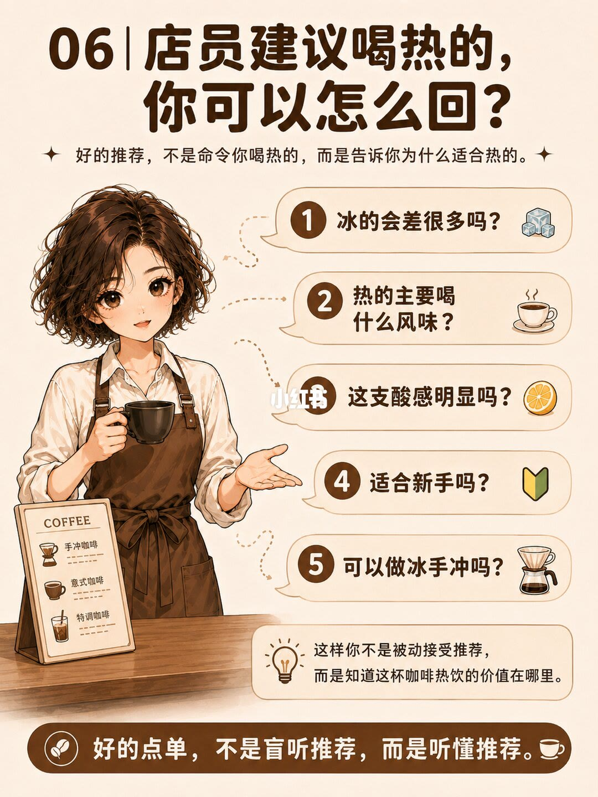
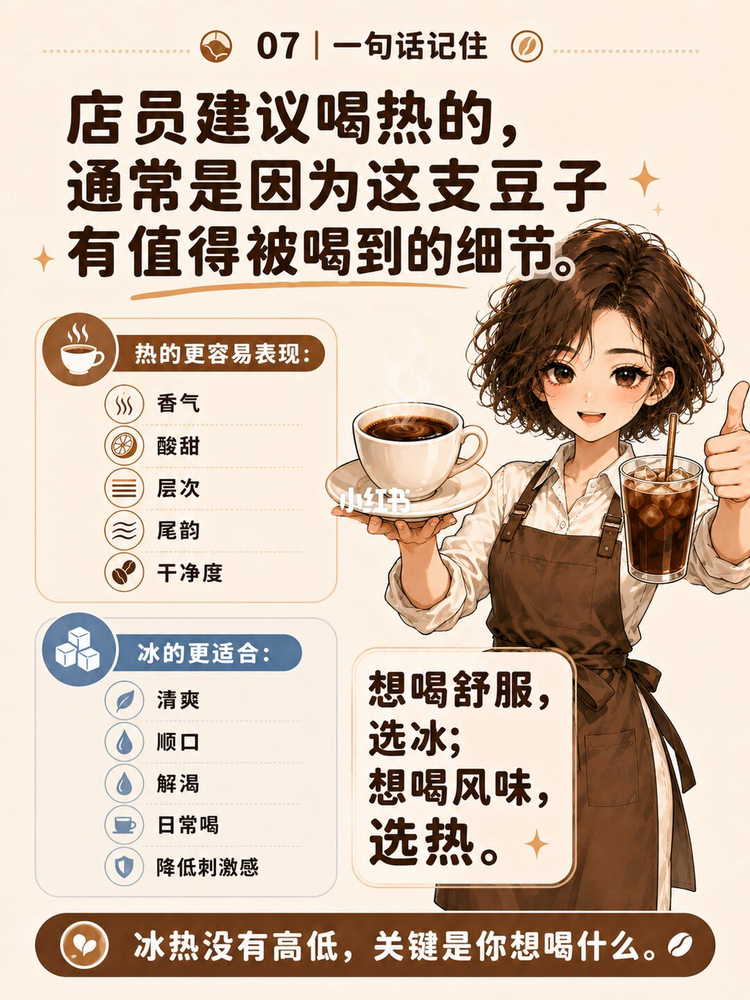

1/8
封面：热的更容易喝到完整风味

大标题是「一套图看懂｜为什么有些咖啡建议喝热的？」。副题是「不是冰的低级，是热的更容易喝到完整风味。」中间一杯热咖啡，周围五点。
1. 香气：热饮能更好释放咖啡的香气，层次更丰富立体。2. 酸甜层次：温度能让酸甜更明亮、圆润，层次更清晰。3. 温度变化：从入口到尾段的温度变化，带来更丰富的味觉体验。4. 尾韵：热饮尾韵更持久，回甘更明显，余韵更迷人。5. 豆子本身的干净度：热饮更能呈现豆子的干净度与品质细节。
下方对照。喝热的：更容易感受到完整风味，适合慢慢品味。喝冰的：更清爽解渴，但风味会被低温与冰块部分抑制。页底一句：想解渴可以喝冰，想喝风味更建议喝热。
2/8
图内 01：热咖啡香气更明显

页题「01｜热咖啡香气更明显」。引导句：咖啡很多风味，其实先是闻到的，不只是喝到的。
热饮状态下，香气更容易被释放。图上列出更容易感受到的六种：花香、果香、坚果香、焦糖香、巧克力香、烘烤香。
冰饮也有香气，但低温会让香气更收敛。三条说明：低温减慢香气分子的挥发；冰块稀释风味，香气更不容易被察觉；但仍能感受到清新果香、坚果或可可的气息。
页底：热咖啡更像打开香气，冰咖啡更像把香气收起来。
3/8
图内 02：热饮喝的是温度变化

页题「02｜热饮更容易喝到酸甜变化」。副题：热咖啡不是只喝第一口，而是喝温度变化。左侧一条从「热」到「凉」的色条，连着三段，没有度数。
刚上桌：香气和热感明显。稍微降温：甜感、酸质、层次开始出来。再凉一点：尾韵、干净度、杂味会更明显。
页底：越会变化的咖啡，越值得先试热的。这一页把「再凉一点杂味更明显」和干净度放在一起，没有说越凉越好。
4/8
图内 03：冰让咖啡清爽，也让细节变少

页题「03｜冰会让咖啡变清爽，也会让细节变少」。中间是热咖啡和冰咖啡的对照，左右各五条。
冰咖啡的优点：清爽，降温解腻，带来清凉感受；顺口，口感更圆润，喝起来更轻松；好入口，降低苦感，更容易被接受；适合夏天，消暑提神，身体更舒适；适合日常提神，提神不厚重，适合日常饮用。
冰带来的变化（取舍）：香气变弱，低温抑制挥发，香气不易被感知；酸感变钝，酸味分子活性降低，层次感减弱；甜感变轻，低温下甜感不突出，整体更清淡；冰块会稀释浓度，冰融化后，咖啡整体变淡；尾韵没那么明显，冷却影响风味延续，余韵不再持久。「酸味分子活性降低」是这一页的说法，图上没有测量。
提示框：你喝到的是更清爽的版本，不一定是最完整的版本。小字：冰咖啡更强调舒适与轻盈，牺牲的是风味的完整度。页底：冰咖啡不是不好，只是表达方式更轻。
5/8
图内 04：细腻的豆子更适合先喝热的

页题「04｜什么豆子更适合喝热的？」。原则：越细腻的豆子，越适合先喝热的。插画旁写：先喝热的，更容易发现豆子的细节哦。
菜单上出现这些风味词，通常值得先试热的：花香、柑橘、莓果、白葡萄、蜂蜜、茶感、热带水果、复杂层次。图上没有产地、处理法或烘焙度。
为什么建议先喝热的：这类豆子的重点在细节，不只是解渴。热饮更容易喝到：香气怎么展开、酸甜怎么变化、尾韵干不干净、层次有没有出来。页底再写一遍：越细腻的豆子，越值得先试热的。
6/8
图内 05：什么情况适合喝冰的

页题「05｜什么情况适合喝冰的？」。副题：喝咖啡不是考试，冰热都可以看心情。六种情况：
想清爽：天热或心情燥热时，来一杯冰的更轻盈。想解渴：冰饮水分更多，更适合补水解渴。想提神：冰咖啡吸收快，快速赶走困意。想少负担：冰饮通常口感清爽，热量感知更低一些。不想酸苦太明显：低温能柔化酸感和苦味，口感更圆润顺口。只是日常喝一杯：没有特别目的，就想轻松喝一杯。
「吸收快」「热量感知更低一些」是这一页的说法，没有速度或热量数字。例子：冰美式、冰拿铁、冷萃，本来就很适合日常饮用。旁边写：不用觉得点冰的就不懂咖啡，只是需求不一样。页底：喝舒服，选冰；喝风味，先试热。
7/8
图内 06：店员建议喝热的，可以怎么回

页题「06｜店员建议喝热的，你可以怎么回？」。副题：好的推荐，不是命令你喝热的，而是告诉你为什么适合热的。五句问法：
1. 冰的会差很多吗？2. 热的主要喝什么风味？3. 这支酸感明显吗？4. 适合新手吗？5. 可以做冰手冲吗？
柜台上的小牌写着手冲咖啡、意式咖啡、特调咖啡，是店面示意，没有展开做法。提示：这样你不是被动接受推荐，而是知道这杯咖啡热饮的价值在哪里。页底：好的点单，不是盲听推荐，而是听懂推荐。五句都是问题，图上没有标准答案，也没有说每支豆子都能做冰手冲。
8/8
图内 07：一句话记住

页题「07｜一句话记住」。主句：店员建议喝热的，通常是因为这支豆子有值得被喝到的细节。
热的更容易表现：香气、酸甜、层次、尾韵、干净度。冰的更适合：清爽、顺口、解渴、日常喝、降低刺激感。右侧：想喝舒服，选冰；想喝风味，选热。页底：冰热没有高低，关键是你想喝什么。
汇总
先分清你要风味还是要舒服
结论：店员建议喝热，按这套图是因为这支豆子的细节在热饮里更容易被喝到，不是因为点冰就不专业。热饮被写成香气、酸甜变化、尾韵和干净度的放大；冰饮被写成更清爽、更顺口，同时香气、酸甜、浓度和尾韵会被低温和冰块收掉。想解渴、想舒服就选冰；想喝风味就先试热。
支撑页：第 1 页给出五点总览和「解渴喝冰、风味喝热」。第 2 页写香气打开与收敛，并保留冰饮仍有果香、坚果或可可。第 3 页把热饮拆成刚上桌、稍微降温、再凉一点三段。第 4 页把冰的优点和五项取舍并列。第 5 页用八个风味词标出更值得先试热的豆子。第 6 页列出适合喝冰的六种情况。第 7 页给五句问法。第 8 页把热的五项表现和冰的五项用途收成对照。
边界：八页没有摄氏度、粉水比、克重或烘焙曲线，「稍微降温」「再凉一点」不能换成温度。第 5 页是菜单风味词，不是豆单或配方。第 4 页「酸味分子活性降低」、第 6 页「吸收快」「热量感知更低一些」都没有数据。第 3 页写再凉一点杂味也会更明显，所以不是越凉越完整。第 7 页只给问题，没有回答冰手冲能不能做。第 8 页「冰热没有高低」是选择标准，不是品鉴分数。